Guitar Wood
Which guitar woods are the most commonly used? What are their properties? And, more importantly, does that change the sound of a guitar? Everything's answered here.
1. Does it change anything?
There's an endless debate between guitar players on the importance of choosing the right tonewood. So, concretely, does that alter the guitar sound? The answer is: yes.
Of course, there are other factors to take into account. The way the guitar is made, its size, shape, age... And a lot more. Not even two identical models would sound the same, due to a simply natural reason : wood. It changes constantly.
2. On guitar wood knowledge...
You must have come to this page for a reason, which maybe is that:
- You want to repair your guitar, replace or fill one part of it.
- You intend to buy a guitar and wanna know which wood suits better your playing.
- You want to build a guitar and do not know where to start.
Whichever goal you might have, you will leave this page with a greater knowledge on guitar wood, and - well, I cannot guarantee it - with your definitive idea in mind.
3. Acoustic guitar
Even though wood plays its role on both electric and acoustic guitar, it certainly has more impact on the latter. But again, it goes back to the eternal debate.
There's a couple of wood types used for this instrument, let's see first those used for the soundboard.
3.1. Top.
If you plan on making an acoustic guitar, or even have it built, taking your time before choosing the top wood is absolutely necessary. The top is responsible for a large part of the guitar sound.
|
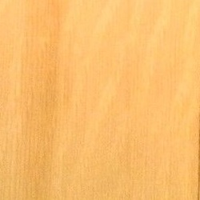
Spruce (Sitka Spruce) The most popular wood. Its success comes from the fact that it is less prone to break than any other top materials as it is very strong, but also quite light. |
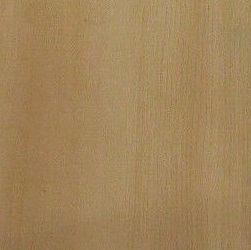
Cedar (Western Redcedar) The classical choice. This wood is used a lot for classical guitar these days. It gives the guitar a dark warm sound appreciated for finger-picking. |
Sometimes, other types are used such as mahogany for steel-string guitars, or basswood for classical guitars. If you desire a more unique sound on your guitar, go for a rarer guitar wood, but keep in mind that it's often more expensive, as less employed.
3.2. Side, back and neck.
Typically, hardwood is preferred for those guitar parts. What's the right type of wood to use for the back, sides and neck of your guitar? Well... It's not as important to know that as it is for the top. But still, if you want to make the right choice, here's what you can find:
|
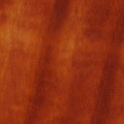
Mahogany (Honduran Mahogany) Really rare guitar wood. But also one of the most used for the body. Warm tone and long sustain. |
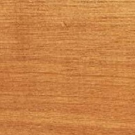
Nato (also Nyatoh) Cheap but easily found. Many Asian guitars are made with that kind of wood. Not as luxurious as mahogany, but still a decent wood. |
|
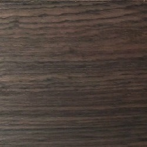
Indian Rosewood Good for classical guitars This one is often found on guitar necks, but it's also used for back and sides. It's a great substitute to mahogany. It's actually quite popular for classical guitar. |
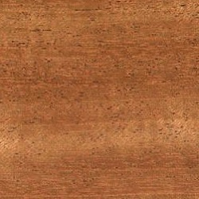
Khaya The African Mahogany Khaya is a great choice if you can't afford the price of Honduran Mahogany. The wood tone is warm and it's a little bit denser than its Honduras cousin. |
And there are many other woods usable for guitar neck, back and sides such as: Meranti, Australian Red Cedar, or Sapele... The choice is yours to make.
4. Electric guitar
The pickup is more important than the wood you're going to choose. But the latter still has a role to play in the sound. Make sure you give it a thought before you buy any components.
4.1 Top
The guitar top is 50% of the time the same wood as the body. So... What about the rest? Let's see what we have.
|
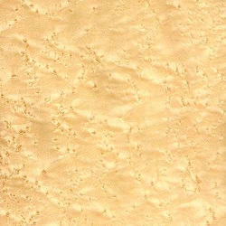
Maple (here: Bird's Eye Maple) The Strat' Choice 75% of the time, the Stratocaster top is the same as the body. But for the rest, maple is chosen. And sometimes, it's also added to the Telecaster body. |
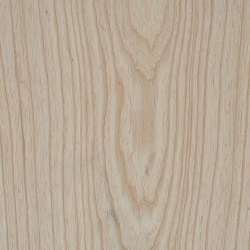
Swamp Ash A good ol' wood This kind of wood comes from South America, where the trees have their roots under water. It was on a lot of Telecasters in the 50's. Often used along with an ash body. |
On archtop guitars, it's not rare to see a top made of sitka spruce as an alternative to maple. But the latter remains the common choice made by manufacturers.
4.2. Body and neck.
Every piece of wood is different, even for the same type, cut nearly at the same place. Before buying a guitar, it's good to see if the wood is of quality. Knock on it and check the resonance. If it sounds deaf, try another guitar. That said, let's see the common neck and body woods used for the electric guitar:
|
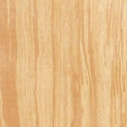
Alder (Red Alder) This is a Strat's World. It's clearly the preferred wood Fender uses for Stratocaster and even Telecaster bodies (it surpassed swamp ash over time). 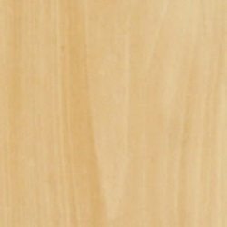
Basswood (American Basswood) The Cheaper Alternative Alder is quite expensive. Basswood is a great choice in case you cannot afford Alder or any exotic wood of your choice. Jackson employs this wood often. |
Mahogany (Honduran Mahogany) Les Paul's favorite Also used on Stratocasters and other guitars, it's certainly on a Les Paul body and neck(Gibson, Epiphone and other copies) that mahogany is dominant. 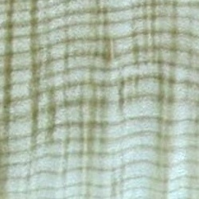
Maple (Here: Flamed Maple) A neck wood This is the wood for Strat' and Tele guitar necks. Sometimes, you even find a combination of walnut and maple. It's also quite loved for archtop guitars along with mahogany. |
5. Fretboard
Now, let's see the kinds of wood used for both acoustic and electric guitars fingerboard:
- Rosewood: this is clearly the most popular guitar wood here. Classical, steel-string, Strat', Les Paul... You will find mostly rosewood on their fretboard.
- Maple: as usual, Stratocasters and Telecasters employ this type of wood. Rarely used otherwise.
|
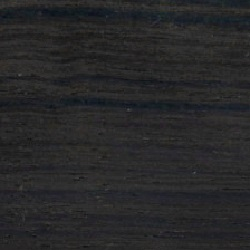
|
Ebony (Gaboon Ebony): This wood tends to be the luxury choice for any guitar players. It has grown very rare, and now, the only place we can find it is in Cameroon (except for the stock left in other countries). Ebony on fretboards used to be jet black, and it was loved for that. Bob Taylor made the recent decision to use all the wood from the trees sown. Now you won't find any newly made guitar with entirely black fretboards. However, it's still a great wood for fingerboards, certainly the best. But it comes with the price. |
Home › Guitar Making › Guitar Wood
New Articles
-
When You Say Nothing At All
Jul 25, 16 04:33 PM
When You Say Nothing At All by Ronan Keating is an acoustic guitar song. Check the chords of this song here.
-
Dust in The Wind Chords
Jul 19, 16 06:27 PM
These are the chords for Dust in The Wind, beautiful ballad by Kansas. Enjoy.l
-
Lazy Song Chords
Jul 11, 16 02:38 PM
Wanna learn the chords for Lazy Song by Bruno Mars? This is the right place. The following chords are for the original record. On some live versions, Bruno Mars plays the song one tone below.
-
Hey There Delilah Chords
Jul 09, 16 04:00 PM
These are the chords for Hey There Delilah by Plain White T's. Enjoy.
New! Comments
Have your say about what you just read! Leave me a comment in the box below.